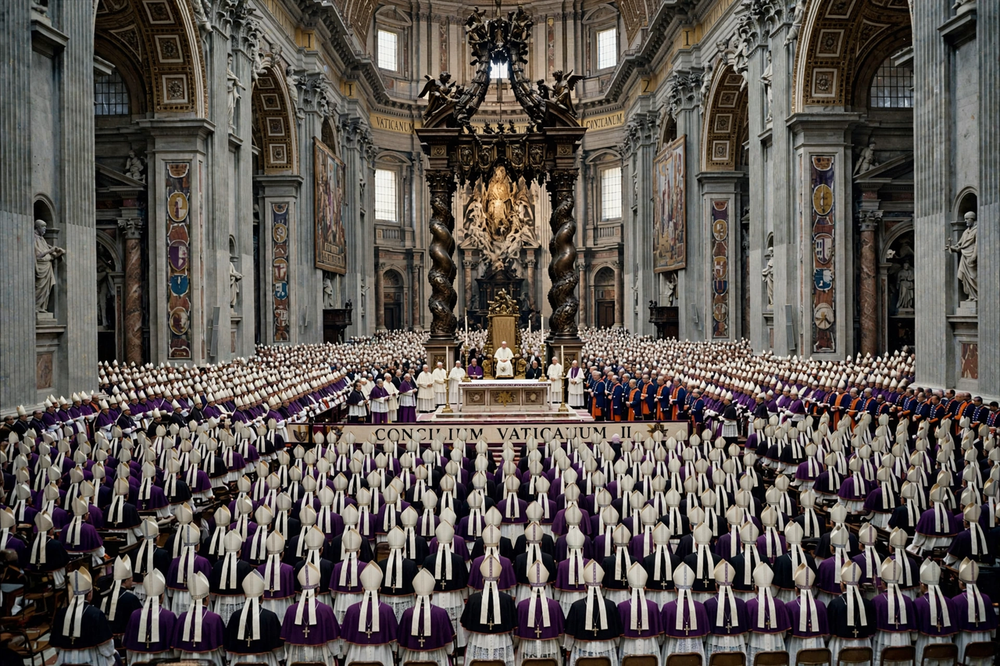

| Second Vatican Council | |
 | |
| Date | 11 October 1962 – 8 December 1965 |
|---|---|
| Location | St Peter's Basilica, Vatican City |
| Convoked by | Pope John XXIII |
| Presided over by | John XXIII; Paul VI |
| Attendance | Up to 2,625 council fathers |
| Documents | 4 constitutions, 9 decrees, 3 declarations |
The Second Vatican Council, commonly known as Vatican II, was the twenty-first ecumenical council of the Catholic Church, held in St Peter's Basilica in Vatican City in four sessions between 1962 and 1965. Announced by Pope John XXIII in 1959 and continued after his death by Pope Paul VI, it addressed relations between the Church and the modern world and produced the most sweeping reforms in Catholic life for centuries.
John XXIII said the Council's aim was aggiornamento — bringing the Church up to date — and a new presentation, not a new definition, of doctrine: "the substance of the ancient doctrine… is one thing, and the way in which it is presented is another." More than 2,600 bishops attended the opening on 11 October 1962, alongside observers from other Christian churches for the first time.
The Council transformed Catholic worship, theology and engagement with other faiths. Its meaning has been debated ever since: Pope Benedict XVI contrasted a "hermeneutic of continuity" with a "hermeneutic of rupture," while traditionalist critics, including Archbishop Marcel Lefebvre's Society of Saint Pius X, rejected parts of its teaching — a rare point of friction that persists in the Church.